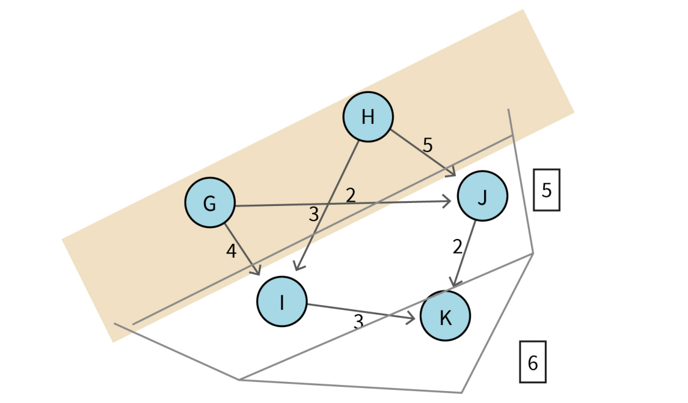
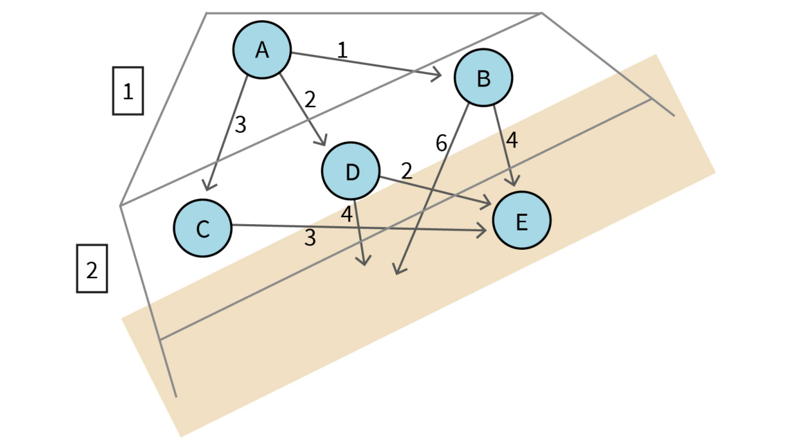
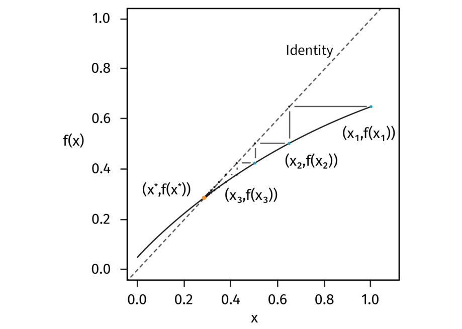

Original visuals for this section
Study these with the detailed explanation in the linked Obsidian note.




DLMAIRIL01 - Source-derived printable review sheet
Condensed from the same learning note. No additional teaching topics or official examination questions. Formulas and fonts render offline.
Bellman's equation combines a current decision with optimal continuation; backward induction, value iteration and policy iteration solve it in different ways, but large state spaces can still make exact optimization impractical.
| Term | Meaning |
|---|---|
| Principle of optimality | Choose the best first action plus an optimal continuation from its successor. |
| Backward induction | Solve finite-horizon stages in reverse order from terminal values. |
| Fixed point | A value/function unchanged by its defining transformation. |
| Bellman operator | Updates values by optimizing stage cost plus expected continuation. |
| Policy iteration | Alternate evaluation and improvement of a policy. |
| Curse of dimensionality | State/action representation and calculation grow rapidly with model complexity. |
| Sparse transitions | Only a small subset of potential successor probabilities are nonzero. |
Backward induction uses known later-stage values. Value iteration uses . Policy iteration alternates evaluation and improvement.
Dense sweep complexity: deterministic versus stochastic. Stagecoach optimum: 15; treasure-search chronological policy: 3, 4, 5 hours if needed.
On the final treasure-search day, compare the six possible hiring durations using 13000(1-exp(-a/13))-700a. The source selects five hours and reports value 650.7. Insert that value as the unsuccessful-search continuation for the preceding day, yielding four hours and 1121.5; the first day then selects three hours and 1469.4.
Study these with the detailed explanation in the linked Obsidian note.



Answer before expanding. Open the answers before printing to include them.
A first admissible action followed by optimal continuation from the next state.
The terminal continuation value is known, so preceding values can be calculated.
Fifteen, attained by three source routes.
Future sale reward depends on whether a sale already occurred, not just the current town.
Days remaining and whether the treasure has been found.
Hire three, then four, then five hours on chronological days if still searching.
1469.4 dollars.
A value function V that satisfies V equals T applied to V.
Evaluation fixes the actions of one policy; optimization compares admissible actions.
Different actions can attain the same minimum cost or maximum return.
Nx times Na and Nx squared times Na, respectively.
When each action reaches only a few possible successors.
Twenty-one possible lengths in each of ten queues create about 1.67 times 10^13 configurations.
Learning note: 02_unit_2_dynamic_programming_and_markov_decision_processes/03_bellmans_equation.
Course book pp. 79-100. Printed page + 2 = PDF viewer page. Personal-study use.